The challenge was to design a mobile app that will allow users to book flights, accommodation, and car for different destinations, while also addressing the user’s pain points.
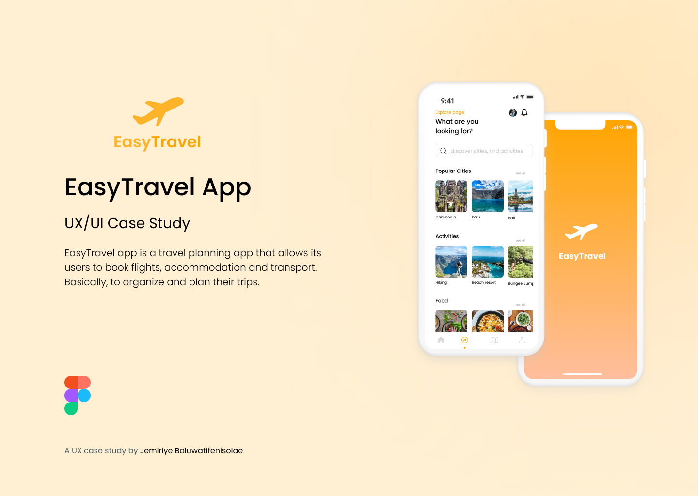
Timeline
4 weeksRole
Sole DesignerTools Used
FigmaOverview
Goal
What should EasyTravel achieve?
Design flow
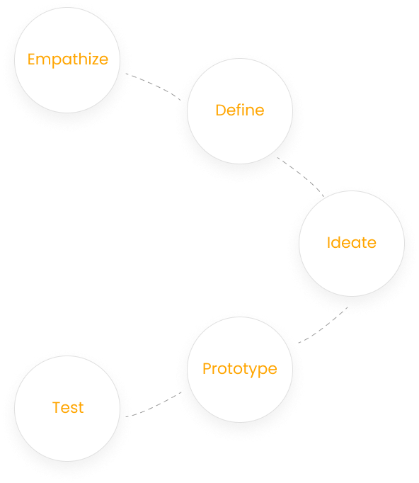
Problem
Booking and plannning trips haven't been an easy one
Many People find it exhausting to...Research
Primary Research
Qualitative research was carried out. The goal of the interview was to understand the users needs and pain points.Target Market
18-50 year oldsKey Insights from User Research
Based on the one-on-one research I carried out, It was discovered that many people would like to connect at the gym and would also like a relatable diet they can follow to stay fit and healthy.Secondary Research
Based on the secondary research i carried out, it was collated to be that ever since the pandemic, the popularity of health and fitness apps has skyrocketed.More people have opted for home workouts to going to the gym because they believe it is cheaper, straight-forward and easily accessible.
According to eMareketer, the number of fitness app users are estimated at over 84 million by the end of 2022 and according to Technavio, the global fitness market will grow by USD 3.5 billion during 2021-2025.
Also, GlobalNewswire estimated that the fitness app market will touch 14.64 billion (approx.) by the year 2027. which is why there is a need to improve the user experience to ensure that the user’s experience is smooth and useful.
How Might We Phrases
Competitive Analysis
I analysed direct and indirect competitors like KAYAK, Booking.com, TripIt, Wakanow and Turkish Airlines.
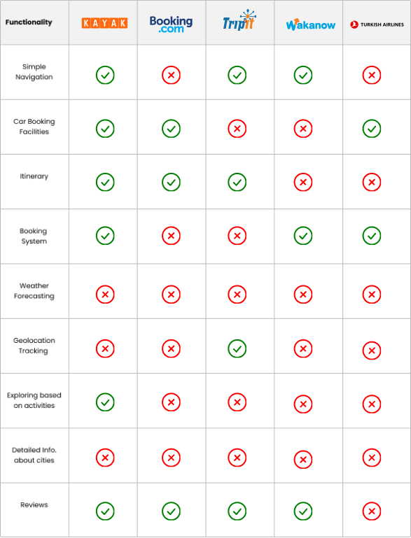Pain Points
What are the user's pain points?
Age: 27
Pain Point: Not always sure what activities to do when I get to my holiday destination
Age: 25
Pain Point: How do I organize and share my flight, accommodation and transport in one go?
The Solution
How can we solve user's problems?
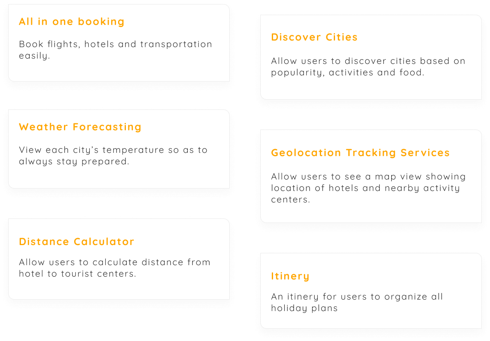User Flow
App Structure
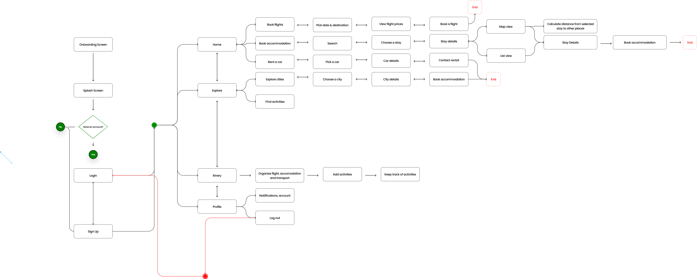Paper Sketches
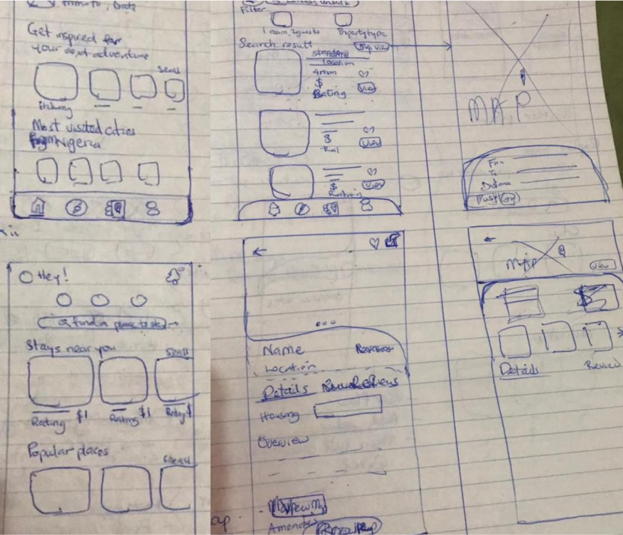
Low Fidelity Wireframes
.png)
Design System

High Fidelity Wireframes
Final Designs
Splash and Onboarding Screens
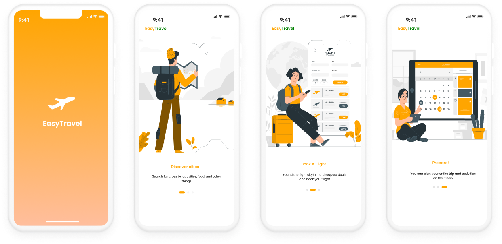Sign Up Screens
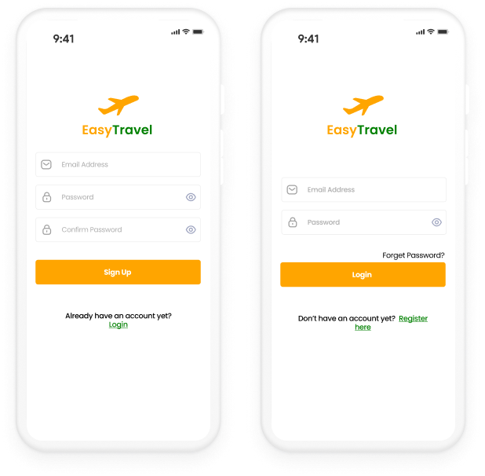Home Page
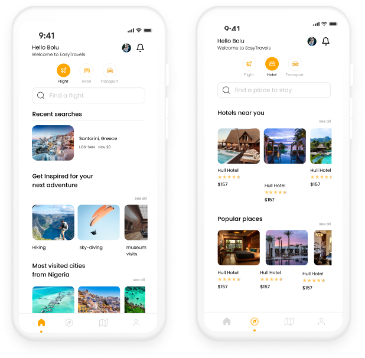Explore
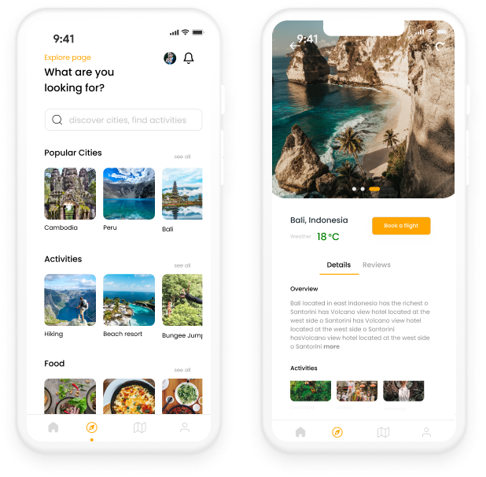Find a Hotel
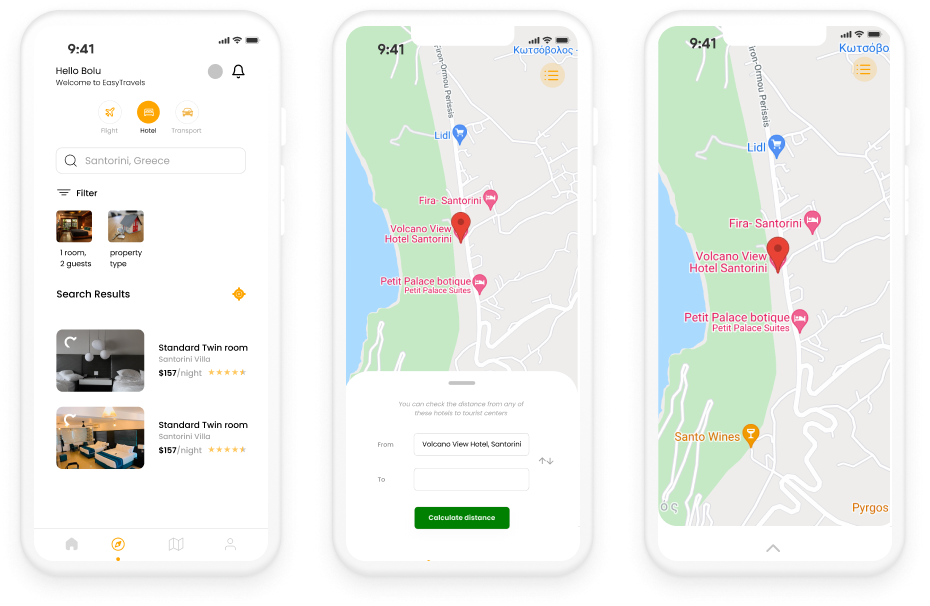Map Distance

Itinery
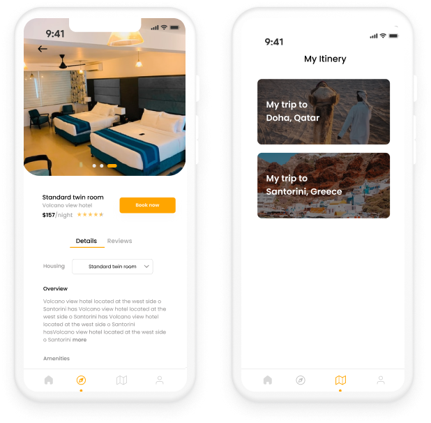Itinery
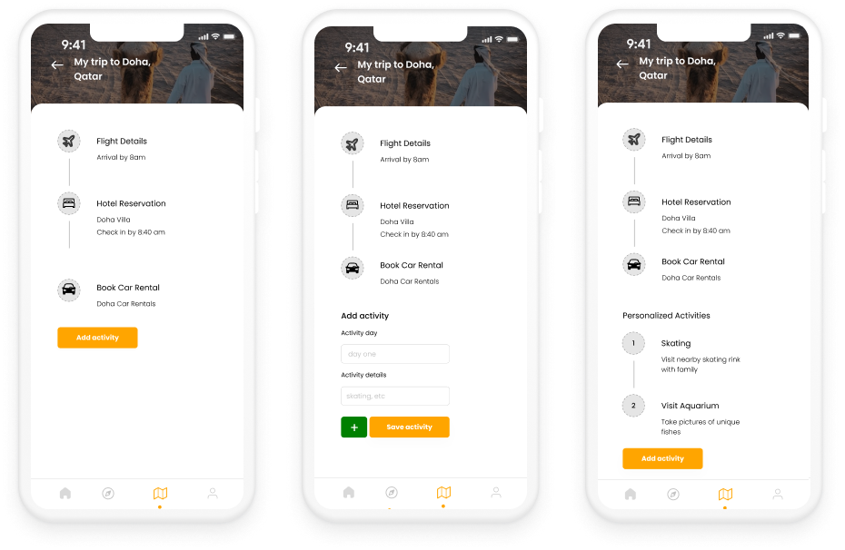Takeaways
While working on this project, I learned more about User Centered Design as I interviewed target users, I got to understand and empathize with them then ensured that their noted pain points were at the front of my mind while designing. Both the secondary and primary research helped shape my thinking and influenced my design decision process.